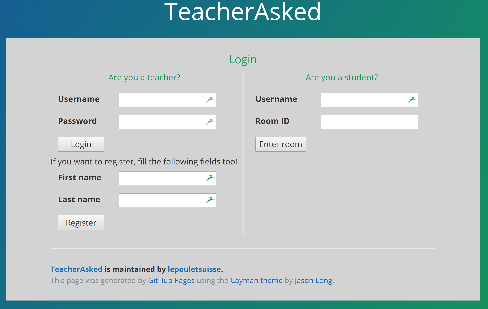
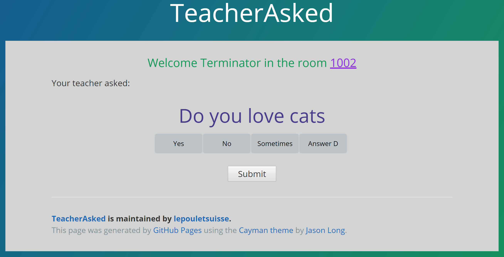
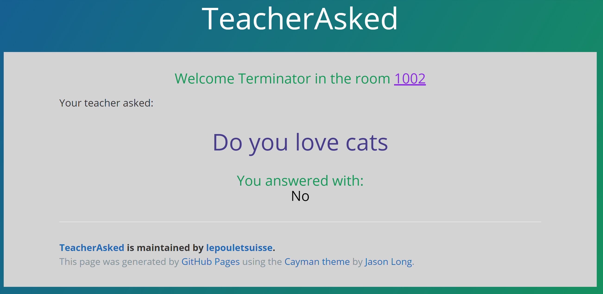
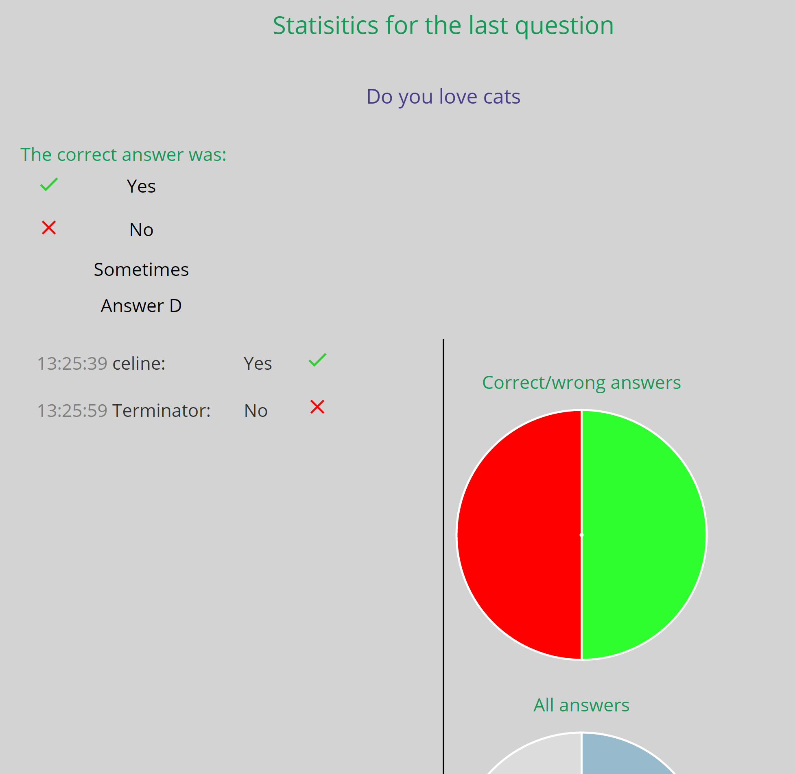
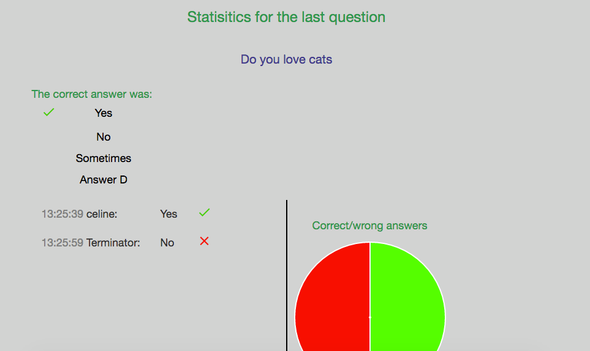

You are a student

Login page
- Go on the application by clicking on the "Go to the app" button or by following this link.
- Log in the room by entering an username and the room ID that your teacher gave you.
- Once you are in the room, you can see the other students that are connected and the current question that is asked (if applicable). You can answer the question by filling the input that is show to you or the multiple choice list. You can't see others answer for the moment.
- Once the question is close by your teacher, you can see others answers and a lot of statistics about it if there is an auto-check.

Answer the question

Answered

False answer

Right answer